小组第一次讲解
小组第一次讲解¶
第一次讲解的时间是9.26(第三周的周四下午) 我们的讲解内容：Memtable【大topic是：存储（数据结构与写入）】
讲解Memtable需要回答的问题： 1. 为什么要有memtable？其作用是什么？ 2. MakeRoomForWrite函数的作用？如何把旧Memtbable冻结？写暂停是如何产生的？ 3. WriteBatchInternal::InsertInto函数的实现。 4. SkipList是如何实现的？如何把数据插入SkipList？如何读取？ 5. 如果一个键出现在多个 memtable 中或多个键出现在同一个memtable中，应向用户返回哪个？ 6. 在冻结 memtable 之后，是否可能有一些线程仍然持有旧的 LSM 状态并写入这些不可变的 memtable？如何防止这种情况发生？ 7. 当不可变的 memtable落盘后还有线程在读这个memtable怎么办？
我的学习历程从这里正式开始
看的仓库：https://github.com/CN-annotation-team/leveldb-chinese-annotated
LevelDB 是 Google 开发的一款经典的 Key-Value 数据库。它的代码简洁优雅，非常适合作为学习数据库的阅读材料。
LevelDB 使用 LSM-Tree （Log Structured-Merge Tree）结构，利用硬盘顺序写远远快于随机写的特点，来实现极高的写入性能。
什么是LSM-Tree?这个和B-Tree有什么异同？
https://jasonkayzk.github.io/2022/11/05/BTree%E3%80%81B-Tree%E5%92%8CLSM-Tree%E5%B8%B8%E7%94%A8%E5%AD%98%E5%82%A8%E5%BC%95%E6%93%8E%E6%95%B0%E6%8D%AE%E7%BB%93%E6%9E%84%E6%80%BB%E7%BB%93/
https://www.bilibili.com/video/BV1se4y1U7Dn/
https://github.com/CDDSCLab/DMCL-2018/blob/master/Theory/Part1_DataStructure/B%20Tree%20B%2B%20Tree%20%E4%B8%8E%20LSM%20Tree%E7%AE%80%E4%BB%8B%E4%B8%8E%E6%AF%94%E8%BE%83.md
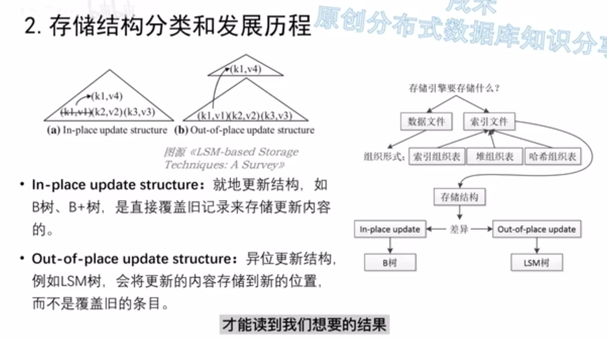
LSM Tree写性能更优，读性能比较差；B-Tree正好相反
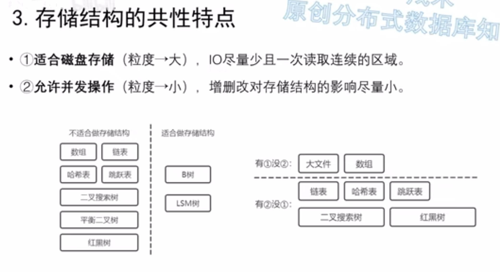
B树适合磁盘存储，允许并发操作（但不是很适合 SMO的存在使并发能力并不是很强）
LSM Tree起源于论文 然后Google Bigtable第一个商业化实现
LevelDB是一个单机LSM树存储引擎并开源
写入的数据首先记入WAL,做实时落盘实现持久性
然后数据有序写入Active Memtable，Active Memtable是一个可变的结构
Active Memtable写满之后把它转化为Immutable Memtable
Active/Immutable Memtable都在内存中，使用的数据结构基本是跳表（skiplist）
Immutable Memtable达到一定数量后就把它落盘到磁盘的L0层（minor merge小合并）
minor merge时候memtable没有整理 直接刷如磁盘 这也就意味着L0层可能有重复的数据
L0层数据满了之后出发major merge(compaction):L0和L1的数据进行合并，全部整理为固定大小的，不可变的数据块【称为SSTable并放到L1层】
SST由索引文件和数据文件组成 数据文件就是KV数据（键值对）
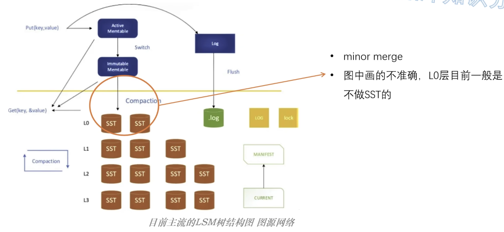
读取的过程就是从上到下层层扫描直到找到所需数据 然后可以利用Bloom Fliter来增快筛选的过程
LevelDB的重要组件：
- memtable
- immutable memtable
- Log (Write Ahead Logging)
- sstable
- Manifest
- Current
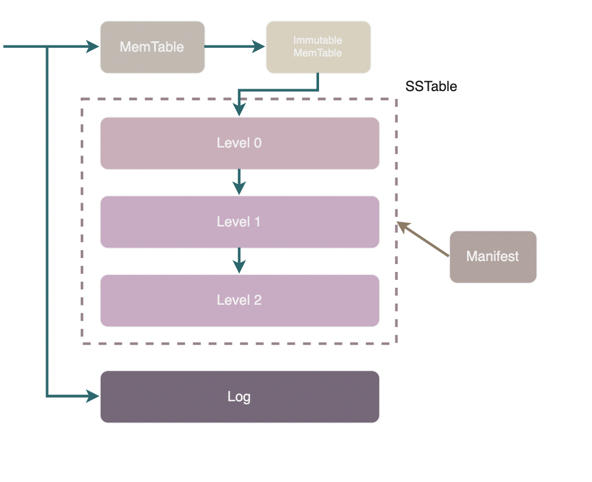
如上图所示，leveldb 中始终有一个 memtable，最多存在一个 immutable memtable，磁盘上还有若干 sstable 分层进行管理。此外会有若干个 Manifest 文件和一个 Current 文件负责维护 leveldb 的元信息，具体来说就是各个 sstable 的信息。
memtable 是一个内存中的有序 map 结构，它的底层实现是一个跳表。在进行写入时，总是首先写入 memtable，当 memtable 的大小达到阈值(4MB)时，memtable 会被转变为不可写入的 immutable memtable。随后 leveldb 的后台线程会将 immutable memtable 的内容转换为 sstable 格式持久化到磁盘上。
什么是跳表（skiplist）?
https://oi-wiki.org/ds/skiplist/
顾名思义，跳表是一种类似于链表的数据结构。更加准确地说，跳表是对有序链表的改进。
一个有序链表的查找操作，就是从头部开始逐个比较，直到当前节点的值大于或者等于目标节点的值。很明显，这个操作的复杂度是O(n)。
跳表在有序链表的基础上，引入了 分层 的概念。首先，跳表的每一层都是一个有序链表，特别地，最底层是初始的有序链表。每个位于第i 层的节点有 p 的概率出现在第 i+1 层，p为常数。【看到这个我挺懵逼的】
我觉得比较好的讲解：https://lotabout.me/2018/skip-list/
这个讲解看起来还行但我没太看：https://blog.csdn.net/Zhouzi_heng/article/details/127554294
sstable (Sorted String Table) 是负责将键值对持久化存储在磁盘上的结构，键值对在table 文件中按照字典序有序排列，故而命名为 Sorted String。此外，sstable 中也包含了一些索引数据以便于查询。sstable 一旦创建便不可修改，不可变的设计极大地简化实现并行操作的复杂度。
leveldb 在修改或删除数据时会直接在 memtable 中写入新版本的数据，并等待 memtable 变为 immutable memtable 然后落盘形成新的 sstable。相对的，在读取时则需要依次搜索 memtable、immutable memtable 以及各个 sstable 直到找到 key 的最新版本。
MANIFEST 文件就是用来管理 leveldb 中的 sstable 的，它记录了每层有哪些 sstable、每个 sstable 的 key range 等信息。
leveldb 的写入机制很可能导致多个 sstable 中包含同一个 Key 的不同版本，而其中比较陈旧的版本不会被读取到，只是在白白浪费磁盘空间。因此 leveldb 在必要时会进行合并操作将 sstable 中过旧的版本删除。这个合并操作被称为 Merge 或 Compaction, 它是 leveldb 的核心逻辑之一，我们将会在后面详细进行分析。每次合并都会删除若干 sstable 并产生若干新的 sstable, leveldb 在每次合并后都会产生一个新的 MANIFEST 文件，而 CURRENT 文件只记录一个信息，就是最新的 MANIFEST 文件名，便于 leveldb 重启时正确加载数据。
上文中提到 leveldb 的写操作并不是直接写入磁盘的，而是首先写入到内存中的 memtable 。假设写入到内存的数据还未来得及持久化，leveldb 崩溃抑或是宿主机器发生了宕机则会造成用户的写入发生丢失。因此 leveldb 在写内存之前会首先将所有的写操作写到 log 文件(这种 log 通常被称为 Write Ahead Logging, WAL)中，在出现异常后根据 log 文件进行恢复。
leveldb 自带的注释中 File 通常特指 sstable
我们回过头再来看一下 leveldb 的写入流程可以发现，由 memtable 持久化得到的 sstable 之间没有任何关系，键值对分布在哪个 sstable 上是完全随机的。如果不进行优化，我们需要逐个 sstable 进行搜索才能找到我们需要的 key。最坏的情况是我们必须搜索每一个 sstable 才能确定要找的 key 不存在。为了提高搜索效率，leveldb 将 sstable 分成多层（level）进行管理。immutable memtable 持久化产生的 sstable 大多会被放在 level0。当 level 0 中的文件过多时，leveldb 便会将多个 level0 的 table 合并为一个 table 放入 level1。类似地当 level1 中数据过多时，便会将若干个 level1 的 table 进行合并然后放入 level2。
除了 level0 之外其它层中的 sstable 是有序排列且不重叠的，在读取时每层最多需要进入一个 sstable 进行搜索。
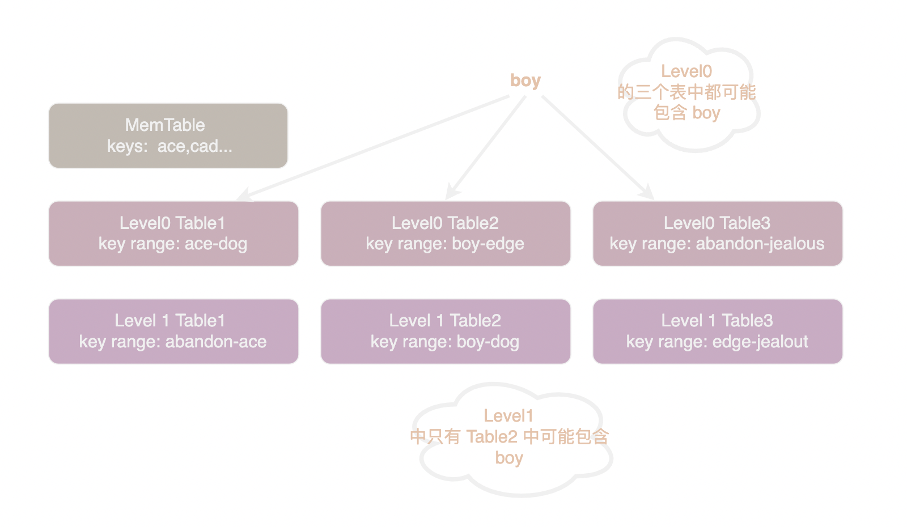
如上图所示，Level0 的 Table1 中 key 的范围是 "ace" 到 "dog", Table2 的范围是 "boy" 到 "edge"。 如果我们在 level0 中搜索 "boy" 首先要搜索 Table1, 如果 Table1 中没有找到则需要再搜索 Table2。也就是说我们需要搜索每一个 key range 中包含 "boy" 的 table。如果我们在 Level1 中搜索 "boy" 只需要搜索 Table2, 因为 Level1 中 table 的 key range 不重叠，所以其它 table 的 key range 中不可能包含 "cat"。
为什么 Level0 中 sstable 不能避免重叠呢？因为避免重叠需要将 table 读入、合并后重新存盘，这显然是非常耗时的操作。但是由于内存有限我们必须尽快将 memtable 存盘腾出空间来给新的 memtable(实际上 memtable 持久化会阻塞写入操作)。所以 level0 采用了最快速的方法：不进行 merge 操作直接持久化 memtable。
LevelDB工具类¶
https://github.com/CN-annotation-team/leveldb-chinese-annotated/blob/annotated/articles/02-utils.md
Slice 是 leveldb 中的字符串类型, 它有一个指针和一个 size_ 字段。通常 Slice 自己不持有内存，而是指向各类 buffer 中的数据。
编码相关的代码都在 util/coding.h 中。Varint 是一种常用的变长整型编码方式，varint 中每个字节的最高位为 1 表示下一个字节仍有数据，0 表示已经是最后一个字节，剩下的 7 位用于存储数据。
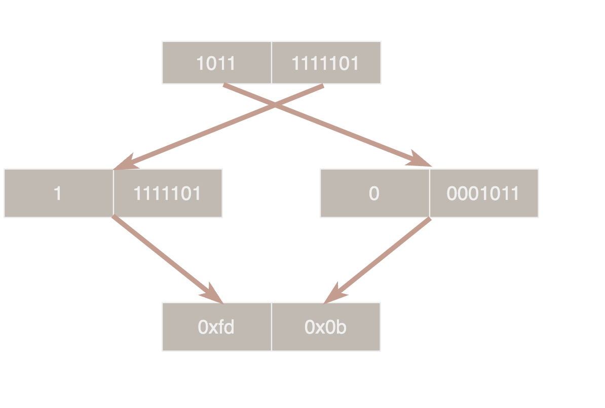
如上图所示 1501 (10111011101) 的编码过程，先取低 7 位 1111101 最高位补 1 表示后面还有数据，从而得到第一个字节 0xfd，剩下的4位作为第二个字节 0x0b。varint 可以缩短小整数的编码长度，但是由于一个字节只能利用 7 位对于大整数反而更浪费空间。
leveldb 的 MemTable 和 SSTable 内部使用的键为 InternalKey, InternalKey 由 UserKey、SequenceNumber、Type 三部分组成，其中 UserKey 即为用户输入的 key。
SequenceNumber 为一个递增的全局 uint64 序列号，用于实现多版本并发控制(MVCC)。每个写事务(WriteBatch) 都会拥有一个唯一的 SequenceNumber。读事务会先获得当前的序列号然后只读取序列号更小的键值对，这样在读事务开始后的写入便不会被看到。
Type 可能有两个枚举值: enum ValueType { kTypeDeletion = 0x0, kTypeValue = 0x1 };。 leveldb 不直接删除数据而是通过写入一条删除记录来标记某个 key 已被删除，kTypeDeletion 即表示此 key 已被删除，kTypeValue 则是正常的数据。
leveldb 的 MemTable 和 SSTable 中的键值对都是有序的，键值对的顺序由 InternalKeyComparator 进行升序排列。InternalKeyComparator 首先按照 UserKey 升序排列然后按照 SequenceNumber 降序排列，如此一来相同的 UserKey 最新的版本总是排在第一位。
Arena（传送门 arena.h / arena.cc）是一种简单的内存分配器，Arena 会预先分配一大块内存，每次申请对象都从其中连续进行分配。Arena 中分配的对象不能单独释放，只能和 Arena 一起释放。Arena 可以显著的加快内存分配速度并减少内存碎片的产生, leveldb 中的 MemTable 同样会有一个伴生的 Arena，MemTable 中的各种对象都在这个 Arena 上分配。
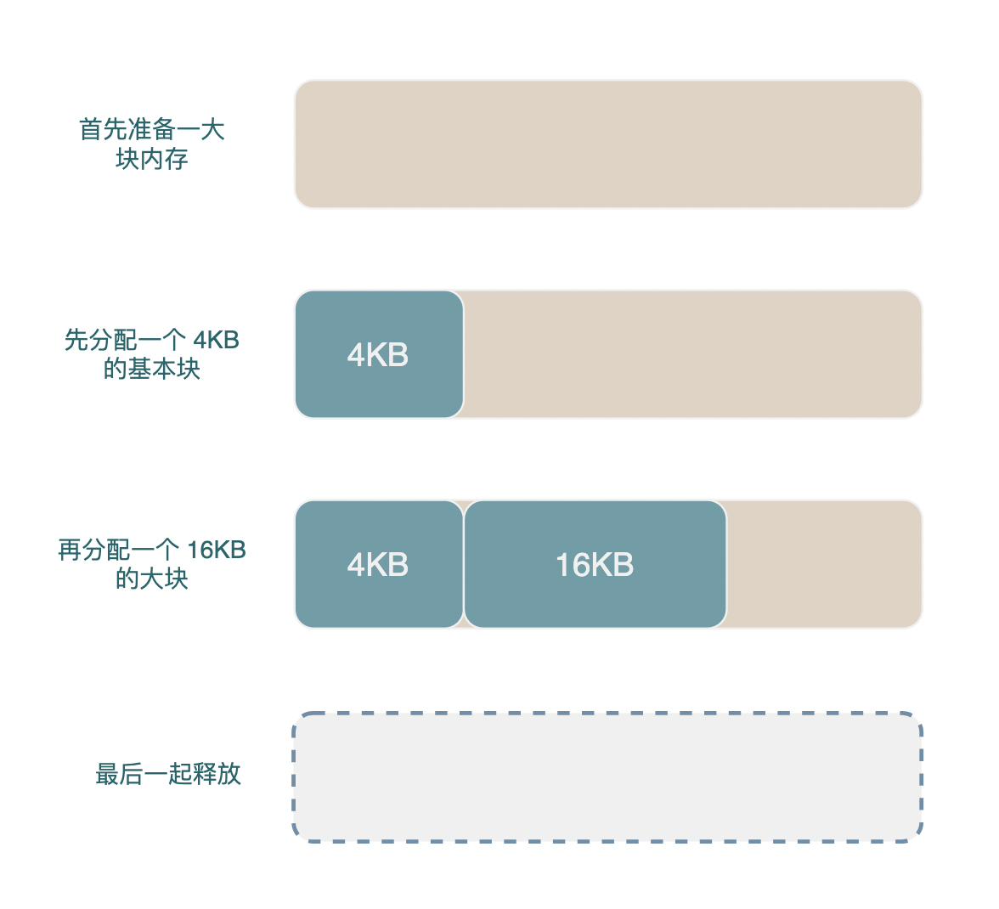
接下来就开始正题（memtable）了
memtable 是一个内存中的有序 map 结构，它的底层实现是一个跳表。本文将介绍 memtable 及其底层跳表的实现。
代码主要在 db/memtable.cc db/memtable.h 跳表的代码在：db/skiplist.h
memtable 使用 InternalKey 作为键类型。由于 InternalKey 中包含 UserKey 和唯一的 SequenceNumber, 所以在同一个 Memtable 中可以容纳对同一个 UserKey 多个版本的数据。由于 memtale 使用 InternalKeyComparator 对 InternalKey 进行排序使相同的 UserKey 中 SequenceNumber 最大的排在第一位，所以我们可以迅速的找到某个 key 的最新值。
与 sstable 一样，memtable 只能添加键值对不能修改或删除键值对。MemTable 底层的跳表在读取时是并发安全的，但写入时必须加锁。特别的，在写入同时可以进行读取操作。也就是说，允许多线程同时读或者一个线程写同时有多个线程读，只禁止多线程同时写。
跳表节点的定义在 skiplist.h 中搜索 struct SkipList<Key, Comparator>::Node 即可找到，它只有两个字段:
struct Node {
// key 字段存储了上层要储存的数据
Key const key;
// next 字段是一个与 Node 实际层数相同的数组
// 记录了各层的 next 指针, next_[0] 是
std::atomic<Node*> next_[1];
}
由于 leveldb 的跳表不支持删除所以不需要 prev 指针，不需要支持排名功能也不需要步长 span, 比 redis 的跳表简单多了
skiplist 中只有 3 个字段需要关注：
class Skiplist {
Arena* const arena_; // 内存池，具体等到 Add 的时候再看
Node* const head_; // 头指针，没什么好说的
std::atomic<int> max_height_; // 跳表的实际高度
}
Get¶
// LookupKey 由 UserKey 和 SequenceNumber 组成
// 找到的值会存在 *value 中，同时 *s 会被设为 ok, 返回 true
// 若值没有找到 *s 会被设为 NotFound 并返回 true, 只有遇到错误时才会返回 false
bool MemTable::Get(const LookupKey& key, std::string* value, Status* s) {
Slice memkey = key.memtable_key();
Table::Iterator iter(&table_);
// seek 会定位到第一个大于等于 LookupKey 的节点上
// 所以，若跳表中不包含 UserKey，iter 此时指向大于 UserKey 的第一个节点
// 若跳表中包含 UserKey, 由于 InternalKeyComparator 按照 SequenceNumber 降序排列，所以 iter 此时指向序列号不超过 LookupKey.SequenceNumber 的最大节点
iter.Seek(memkey.data());
if (iter.Valid()) {
const char* entry = iter.key();
// 省略一些解码操作
switch (static_cast<ValueType>(tag & 0xff)) {
case kTypeValue: {
value->assign(v.data(), v.size());
return true;
}
case kTypeDeletion:
*s = Status::NotFound(Slice());
return true;
}
}
}
memtable 底层使用的跳表只有一个字段可以存储数据, 因此 memtable 必须将 key 和 value 编码在一起。具体编码格式为：
- key_size: varint32 编码的 internal_key 长度
- internal_key 内容
- tag: 包含 SequenceNumber 和 type，具体方式为 uint64((sequence << 8) | type)
- value_size: varint32 编码的 value 长度
- value 内容
接下来看重点，跳表的实现：
inline void SkipList<Key, Comparator>::Iterator::Seek(const Key& target) {
node_ = list_->FindGreaterOrEqual(target, nullptr);
}
Node* SkipList::FindGreaterOrEqual(const Key& key,
Node** prev) const {
Node* x = head_;
int level = GetMaxHeight() - 1;
while (true) {
Node* next = x->Next(level);
if (KeyIsAfterNode(key, next)) { // key > next
// 在当前层级中继续寻找
x = next;
} else {
// next >= key, 准备去下一个层级寻找
if (prev != nullptr) prev[level] = x; // 将当前层级的前驱节点存在 prev 中
if (level == 0) {
return next;
} else {
// 去下一个层级
level--;
}
}
}
}
Seek 函数的核心是 FindGreaterOrEqual，它返回大于等于 key 的一个节点的指针，并将它的在各层的前驱指针存储在 prev 数组中。
FindGreaterOrEqual 并不复杂，熟悉跳表的同学现在应该看懂了。看不懂也没关系我们来画一张图。
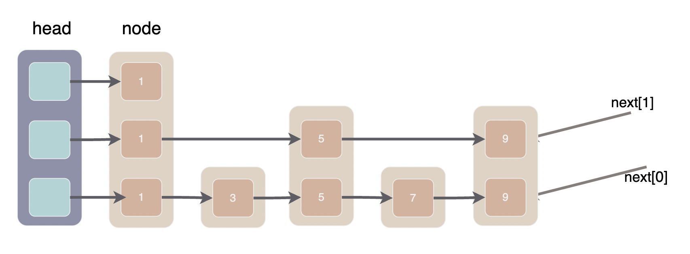
上面是一个跳表的示意图，大方块就是跳表的 Node, Node 内部的小方块就是它的一个 next 指针，里面的数字是 node 的 key。可以很明显的看出，现在的跳表就是三个单链表组成的。
我们模拟一下在上面的跳表中寻找节点 7 的过程，FindGreaterOrEqual 中有两个游标 x 和 level, 首先从最高层开始，遍历本层链表直到 x.next 大于等于 key 时进入下一层，直到在 level0 找到 key 或确认 key 不存在。
- 第1次循环 x=head，level=2，next=节点1。next < key, 令 x = next 在本层中继续寻找
- 第2次循环 x=节点1，level=2，next=null。null 大于任意 key, 进入下一层，同时令 prev[2]=节点1
- 第3次循环 x=节点1，level=1，next=节点5。next < key, 令 x = next 在本层中继续寻找
- 第4次循环 x=节点5，level=1, next=节点9。next > key, 进入下一层，令 prev[1]=节点5
- 第5次循环 x=节点5，level=0, next=节点7. next == key, 令 prev[0]=节点5，level==0 找到节点 7
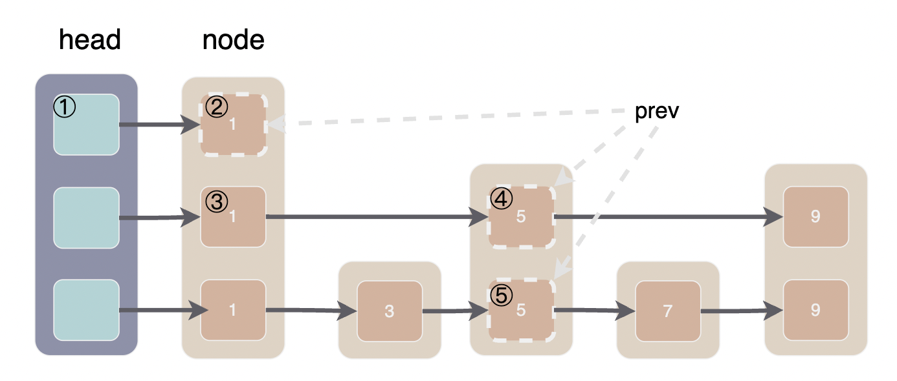
Add¶
上文提到底层的跳表只有一个字段可以存储数据，所以 memtable 必须将 key 和 value 编码在一起，MemTable::Add 函数具体负责这一编码工作。源码比较简单，这里就不贴全了，感兴趣的朋友可以通过传送门去阅读。
这里需要提两点：
- 编码的 buffer 是在 MemTable 的 arena_ 上分配的。arena_ 的生命周期与 MemTable 相同，由于 Memtable 的最大内存为 4MB, 所以 arena_ 可分配的内存大小同样是 4MB
- 底层的跳表不允许插入重复数据，但是 Memtable 插入的 record 中包含全局唯一的 InternalKey 所以实际上不会重复
arena 的介绍在这里 02-基本工具类
void MemTable::Add(SequenceNumber s, ValueType type, const Slice& key,
const Slice& value) {
// 编码的 buffer 是在 MemTable 的 arena_ 上分配的
char* buf = arena_.Allocate(encoded_len);
// 省略一些向 buffer 中写数据的代码
char* p = EncodeVarint32(buf, internal_key_size);
std::memcpy(p, key.data(), key_size);
// table_ 是 MemTable 底层的跳表
// 另外可以注意到 table_.Insert 只接受一个参数
table_.Insert(buf); // 将键值对插入跳表中
}
接下来直接看跳表的 Insert 实现:
void SkipList<Key, Comparator>::Insert(const Key& key) {
// 第一步：使用 FindGreaterOrEqual 返回的 prev 数组作为各层插入时的前驱节点
Node* prev[kMaxHeight];
Node* x = FindGreaterOrEqual(key, prev);
// 第二步：随机选择新节点高度，如果新节点的高度超过了原来跳表的最大高度则进行相关的处理
int height = RandomHeight();
if (height > GetMaxHeight()) {
// 如果新节点的高度超过了原来的最大高度，新增的层数以 head 作为前驱
for (int i = GetMaxHeight(); i < height; i++) {
prev[i] = head_;
}
// 更新跳表的实际最大高度
max_height_.store(height, std::memory_order_relaxed);
}
// 第三步：将新节点添加到 prev 后面，经典的单链表插入
x = NewNode(key, height);
for (int i = 0; i < height; i++) {
// 新节点 x 此时还没有加入链表，无法被访问到，所以在无锁的情况下 SetNext 是安全的
x->NoBarrier_SetNext(i, prev[i]->NoBarrier_Next(i));
// 把 x 加入到链表中就需要锁了
prev[i]->SetNext(i, x);
}
}
第一步的 FindGreaterOrEqual 我们在讨论 Get 的时候已经讲过了。下图说明了在跳表中插入一个高度为 4 的节点 8 的操作，prev 数组已经标出，应该不需要多解释。
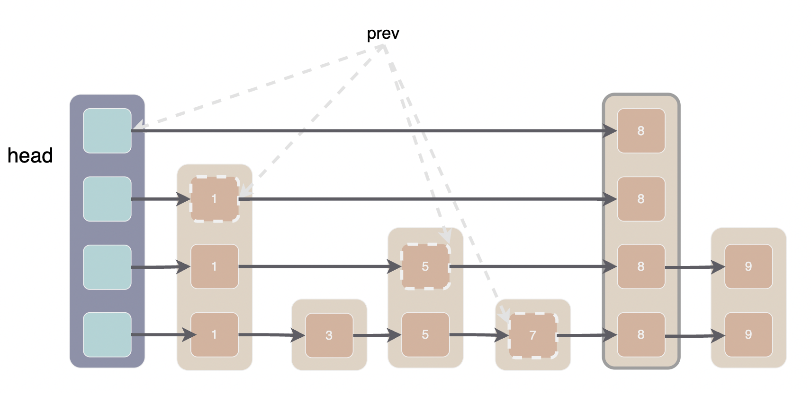
最后我们再来讨论一下跳表的并发安全问题，不能并发写入以及可以并发读取都很好理解，那么为什么可以在写入时读取呢。
Add 函数写入由两处：一是修改 max_height, 二是向 prev 后面插入新节点。
我们注意到 Add 函数在修改 max_height 时采用的是 memory_order_relaxed，同时执行的 Get 函数可能读到新的 height 也可能读到旧的 height。
如果读到旧的 height 自然是安全的，如果读到新的 height, 那么读线程可能碰到 len(head.next_) < max_height 的情况，此时将 head.next_[max_height-1] 当做 null 处理即可。
第二种可能遇到的奇怪情况是，写线程正在插入新节点，读线程整好遍历到 prev 数组的某个节点。
我们注意到插入的顺序和读取的顺序正好是相反的，读取自顶向下而插入自底向上。而且先连接新节点后面的节点，再将新节点接入到 prev 后面。也就是说，当写线程原子性的执行了 prev[i]->SetNext(i, x); 之后，第 i 层 x 节点之后要读取的跳表都是完整的，读线程可以正常 Seek。
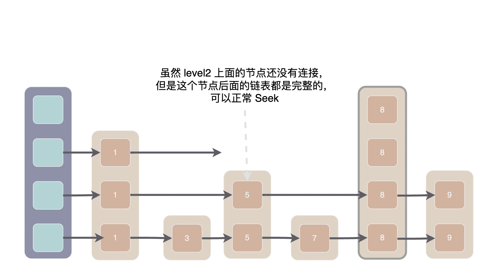
【Q1】为什么要有memtable？其作用是什么？¶
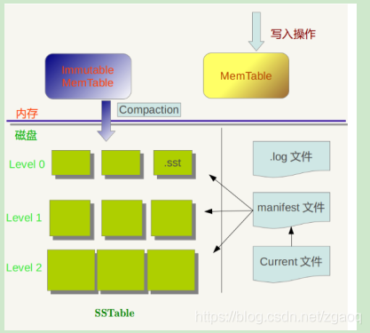
【我的整合】Memtable在LevelDB中所起到的作用是在内存层面提供了一个随机写的容器，对skiplist、arena、comparator进行组合和管理，相当于一层LevelDB对外的屏障屏蔽了底层操作，肩负着最大的写入压力， 当Memtable的体积达到一个上限，Memtable就会转换成Immutable Memtable，然后紧接着放到后台执行Compaction操作转换成Level 0层的sst文件，这样就使Immutable Memtable中的数据落地了，实际上Memtable和Immutable Memtable的结构完全相同，只不过前者是可读可写，后者只是可读的而已。
而且Memtable的存在方便快速查询写入WAL日志中、但还没有被写入到SSTable中的数据，方便写入到SSTable，加快了MinorCompaction的速度。
【来自csdn】之所以要有Immutable memtable的原因：为了防止写入kv时被阻塞。如果没有immutable memtable，当memtable满了之后后台线程需要将memtable 立即flush到新建的sst中，在flush的过程中，新的KV记录是无法写入的，只能等待，就会造成新写入的KV记录被阻塞。
【来自https://axlgrep.github.io/tech/leveldb-memtable.html】Memtable在LevelDB中所起到的作用是在内存层面提供了一个随机写的容器，相当于一层LevelDB对外的屏障，肩负着最大的写入压力， 当Memtable的体积达到一个上限，Memtable就会转换成Immutable Memtable，然后紧接着放到后台执行Compact操作，转换成Level 0层的sst文件，这样就使Immutable Memtable中的数据落地了，实际上Memtable和Immutable Memtable的结构完全相同，只不过前者是可读可写，后者只是可读的而已.
【来自https://www.21ic.com/tougao/article/12631.html】 Memtable主要作用是对skiplist、arena、comparator进行组合和管理，接口函数屏蔽了底层操作，对使用者更加优雅。
【来自https://www.modb.pro/db/181755】Memtable的作用正如其名，是LevelDB在内存中的表，它的存在是为了方便快速查询写入WAL日志中、但还没有被写入到SSTable中的数据；另外，内存表还能加快MinorCompaction的速度。Memtable是为了方便查询，方便写入到SSTable，所以Memtable的数据结构需要满足以下两个条件：一是查询复杂度低、二是有序。满足这两个条件的数据结构最常见的就是查找树，比如：红黑树、BTree等，但是LevelDB的作者没有选择树，二是选择另一种数据结构：SkipList跳表。
【Q2】MakeRoomForWrite函数的作用？如何把旧Memtbable冻结？写暂停是如何产生的？¶
【我的整合】【我感觉这里需要详细介绍一下DB::Put的流程，但是真的很复杂，参考https://blog.csdn.net/sinat_38293503/article/details/134740029】
MakeRoomForWrite的作用是确保有足够的空间来进行新的写入操作。具体来说，这个函数的逻辑可以分为以下几个步骤：
- 检查是否需要强制切换memtable：如果参数
force为true，或者当前memtable的大小已经超过了阈值，那么就需要强制切换memtable。
if (force || mem_->ApproximateMemoryUsage() > options_.write_buffer_size)
- 切换memtable：将当前的memtable（memtable）转换为不可变memtable（immtable），然后创建一个新的memtable来存储新的写入操作。
if (imm_ != nullptr) {
Log(options_.info_log, "Current memtable full; waiting...\n");
while (imm_ != nullptr && bg_error_.ok()) {
bg_cv_.Wait();
}
}
- 触发后台线程：如果当前没有后台线程在运行，那么就触发一个后台线程来将不可变memtable写入磁盘。
if (bg_error_.ok() && !bg_compaction_scheduled_ && imm_ != nullptr) {
bg_compaction_scheduled_ = true;
env_->Schedule(&DBImpl::BGWork, this);
}
- 等待足够的空间：如果写入操作的数量超过了一定的阈值，那么
MakeRoomForWrite函数还会等待直到有足够的空间可以进行新的写入操作。这是通过一个循环来实现的，循环的条件是写入操作的数量超过了阈值。
while (bg_error_.ok() && writers_.size() > kL0_SlowdownWritesTrigger) {
Log(options_.info_log, "Too many L0 files; waiting...\n");
bg_cv_.Wait();
}
以上是MakeRoomForWrite函数的主要逻辑。其作用是管理memtable的空间，确保有足够的空间来进行新的写入操作。
如何把旧Memtbable冻结？这个问题在MakeRoomForWrite函数的主要逻辑讲解时也有体现。
if (imm_ != nullptr) {
Log(options_.info_log, "Current memtable full; waiting...\n");
while (imm_ != nullptr && bg_error_.ok()) {
bg_cv_.Wait();
}
}
在这个过程中，由于 memtable 中空间的不足可能会冻结当前的 memtable，发生 Minor Compaction 并创建一个新的 MemTable 对象来存储新的写入操作。
写暂停是如何产生的？
if (versions_->NumLevelFiles(0) >= config::kL0_StopWritesTrigger) {
Log(options_.info_log, "Too many L0 files; waiting...\n");
background_work_finished_signal_.Wait();
}
这个问题很简单，在MakeRoomForWrite函数中，需要用一个参数，kL0_StopWritesTrigger（默认值为 12 ）如果当前0级文件数量大于等于kL0_StopWritesTrigger：说明0级文件太多，需要暂停写入，直到被唤醒。
【MakeRoomForWrite有关解析：https://blog.csdn.net/sinat_38293503/article/details/134740029】
MakeRoomForWrite的作用是确保有足够的空间来进行新的写入操作。具体来说，这个函数的逻辑可以分为以下几个步骤：
- 检查是否需要强制切换memtable：如果参数
force为true，或者当前memtable的大小已经超过了阈值，那么就需要强制切换memtable。
if (force || mem_->ApproximateMemoryUsage() > options_.write_buffer_size)
- 切换memtable：将当前的memtable（memtable）转换为不可变memtable（immtable），然后创建一个新的memtable来存储新的写入操作。
if (imm_ != nullptr) {
Log(options_.info_log, "Current memtable full; waiting...\n");
while (imm_ != nullptr && bg_error_.ok()) {
bg_cv_.Wait();
}
}
- 触发后台线程：如果当前没有后台线程在运行，那么就触发一个后台线程来将不可变memtable写入磁盘。
if (bg_error_.ok() && !bg_compaction_scheduled_ && imm_ != nullptr) {
bg_compaction_scheduled_ = true;
env_->Schedule(&DBImpl::BGWork, this);
}
- 等待足够的空间：如果写入操作的数量超过了一定的阈值，那么
MakeRoomForWrite函数还会等待直到有足够的空间可以进行新的写入操作。这是通过一个循环来实现的，循环的条件是写入操作的数量超过了阈值。
while (bg_error_.ok() && writers_.size() > kL0_SlowdownWritesTrigger) {
Log(options_.info_log, "Too many L0 files; waiting...\n");
bg_cv_.Wait();
}
上是MakeRoomForWrite函数的主要逻辑。其作用是管理memtable的空间，确保有足够的空间来进行新的写入操作。
【没有解决的问题：如何把旧Memtbable冻结？】https://draveness.me/bigtable-leveldb/
随着写操作的进行，memtable 会随着事件的推移逐渐增大，当 memtable 的大小超过一定的阈值时，就会将当前的 memtable 冻结，并且创建一个新的 memtable，被冻结的 memtable 会被转换为一个 SSTable 并且写入到 GFS 系统中，这种压缩方式也被称作 Minor Compaction。
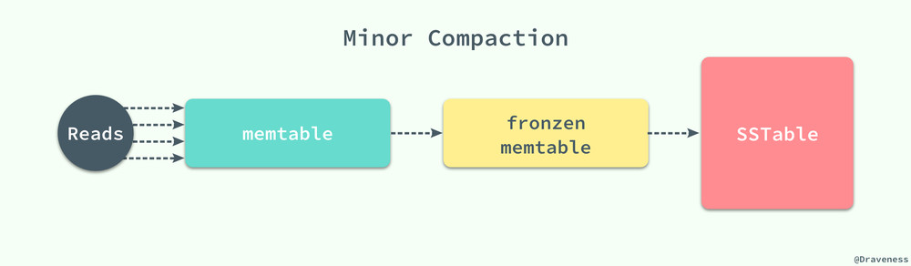
每一个 Minor Compaction 都能够创建一个新的 SSTable，它能够有效地降低内存的占用并且降低服务进程异常退出后，过大的日志导致的过长的恢复时间。既然有用于压缩 memtable 中数据的 Minor Compaction，那么就一定有一个对应的 Major Compaction 操作。
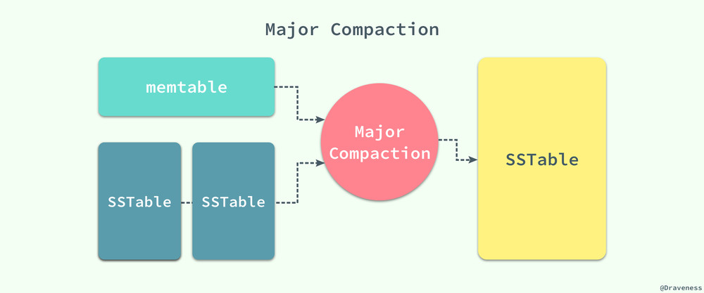
Bigtable 会在后台周期性地进行 Major Compaction，将 memtable 中的数据和一部分的 SSTable 作为输入，将其中的键值进行归并排序，生成新的 SSTable 并移除原有的 memtable 和 SSTable，新生成的 SSTable 中包含前两者的全部数据和信息，并且将其中一部分标记为删除的信息彻底清除。
【没有解决的问题：写暂停是如何产生的？】https://www.cnblogs.com/ljx-null/p/16154773.html 这个链接里有一点点小信息（kL0_StopWritesTrigger，默认值为 12 写入暂停，直到后台合并线程工作完成 block_builder.cc里面有句话 static const int kL0_StopWritesTrigger = 12;）
https://www.codedump.info/post/20190215-leveldb/ 这个链接里也有点信息：如果当前0级文件数量大于等于kL0_StopWritesTrigger：说明0级文件太多，需要暂停写入，直到被唤醒。
【Q3】WriteBatchInternal::InsertInto函数的实现¶
【我的整合】
Status WriteBatchInternal::InsertInto(const WriteBatch* b, MemTable* memtable) {
MemTableInserter inserter;
inserter.sequence_ = WriteBatchInternal::Sequence(b);
inserter.mem_ = memtable;
return b->Iterate(&inserter);
}
先来直接看代码，InsertInto函数构造了MemTableInserter对象，填充sequence和Memtable对象指针。然后调用WriteBatch的Iterate把当前batch的更新记录插入到memtable中。但是实际情况这个并没有这么简单，我们需要一步一步来拆解开细谈。
（主要看这个https://sf-zhou.github.io/leveldb/leveldb_03_write_batch_and_log.html 说实话过程还是非常复杂的）
LevelDB的的键值对写入接口为 DB::Put(options, key, value)，删除某个键值对的接口为 DB::Delete(options, key)，其对应的实现大概长这样（db/db_impl.cc）：
Status DB::Put(const WriteOptions& opt, const Slice& key, const Slice& value) {
WriteBatch batch;
batch.Put(key, value);
return Write(opt, &batch);
}
Status DB::Delete(const WriteOptions& opt, const Slice& key) {
WriteBatch batch;
batch.Delete(key);
return Write(opt, &batch);
}
插入和删除操作首先被打包成一个 WriteBatch，它的定义长这个样子（include/leveldb/write_batch.h）：
class LEVELDB_EXPORT WriteBatch {
public:
class LEVELDB_EXPORT Handler {
public:
virtual ~Handler();
virtual void Put(const Slice& key, const Slice& value) = 0;
virtual void Delete(const Slice& key) = 0;
};
WriteBatch();
WriteBatch(const WriteBatch&) = default;
WriteBatch& operator=(const WriteBatch&) = default;
~WriteBatch();
void Put(const Slice& key, const Slice& value);
void Delete(const Slice& key);
void Clear();
size_t ApproximateSize() const;
void Append(const WriteBatch& source);
Status Iterate(Handler* handler) const;
private:
friend class WriteBatchInternal;
std::string rep_; // See comment in write_batch.cc for the format of rep_
};
可以看到WriteBatch 接口中除了提到的 Put 和 Delete，还提供了一个 Append 方法可以将其他 WriteBatch 合并过来。另外提供了一个 Iterate 迭代函数和对应的 Handler 类接口，后面会使用到。值得注意的还有 friend class WriteBatchInternal;，这种预先定义一个友元类、后期则可以在该友元类中直接访问私有变量和方法，适合一些不方便暴露出来的内部操作。然后我们来看WriteBatchInternal的定义(db/write_batch_internal.h):
class WriteBatchInternal {
public:
static int Count(const WriteBatch* batch);
static void SetCount(WriteBatch* batch, int n);
static SequenceNumber Sequence(const WriteBatch* batch);
static void SetSequence(WriteBatch* batch, SequenceNumber seq);
static Slice Contents(const WriteBatch* batch) { return Slice(batch->rep_); }
static size_t ByteSize(const WriteBatch* batch) { return batch->rep_.size(); }
static void SetContents(WriteBatch* batch, const Slice& contents);
static Status InsertInto(const WriteBatch* batch, MemTable* memtable);
static void Append(WriteBatch* dst, const WriteBatch* src);
};
类中全部是静态函数，并且附带至少一个 WriteBatch* batch 参数。因为友元类的原因这些函数里均可以访问 WriteBatch 里唯一的私有成员 rep_。WriteBatch 和 WriteBatchInternal 函数实现均位于 db/write_batch.cc，为了方便阅读我会把内部的函数重新排序：
// WriteBatch header has an 8-byte sequence number followed by a 4-byte count.
static const size_t kHeader = 12;
WriteBatch::WriteBatch() { Clear(); }
WriteBatch::~WriteBatch() = default;
WriteBatch::Handler::~Handler() = default;
void WriteBatch::Clear() {
rep_.clear();
rep_.resize(kHeader);
}
size_t WriteBatch::ApproximateSize() const { return rep_.size(); }
int WriteBatchInternal::Count(const WriteBatch* b) {
return DecodeFixed32(b->rep_.data() + 8);
}
void WriteBatchInternal::SetCount(WriteBatch* b, int n) {
EncodeFixed32(&b->rep_[8], n);
}
SequenceNumber WriteBatchInternal::Sequence(const WriteBatch* b) {
return SequenceNumber(DecodeFixed64(b->rep_.data()));
}
void WriteBatchInternal::SetSequence(WriteBatch* b, SequenceNumber seq) {
EncodeFixed64(&b->rep_[0], seq);
}
WriteBatch::rep_ 的前 12 个字节定义为 Header，存储了 sequence number 和 count。EncodeFixed 和 DecodeFixed系列函数实现了数值到字符串的编解码，有兴趣可以前往 util/coding.cc 查看实现，这里不详细介绍了。接下来看 Put 和 Delete 的实现：
void WriteBatch::Put(const Slice& key, const Slice& value) {
WriteBatchInternal::SetCount(this, WriteBatchInternal::Count(this) + 1);
rep_.push_back(static_cast<char>(kTypeValue));
PutLengthPrefixedSlice(&rep_, key);
PutLengthPrefixedSlice(&rep_, value);
}
void WriteBatch::Delete(const Slice& key) {
WriteBatchInternal::SetCount(this, WriteBatchInternal::Count(this) + 1);
rep_.push_back(static_cast<char>(kTypeDeletion));
PutLengthPrefixedSlice(&rep_, key);
}
void WriteBatch::Append(const WriteBatch& source) {
WriteBatchInternal::Append(this, &source);
}
void WriteBatchInternal::SetContents(WriteBatch* b, const Slice& contents) {
assert(contents.size() >= kHeader);
b->rep_.assign(contents.data(), contents.size());
}
void WriteBatchInternal::Append(WriteBatch* dst, const WriteBatch* src) {
SetCount(dst, Count(dst) + Count(src));
assert(src->rep_.size() >= kHeader);
dst->rep_.append(src->rep_.data() + kHeader, src->rep_.size() - kHeader);
}
Put 和 Delete 首先将计数加一，在 rep_ 中写入操作类型，再写入键值对。PutLengthPrefixedSlice 函数会先写入字符串的长度，再写入字符串的内容。WriteBatchInternal 的赋值和追加均是对 rep_ 的进行操作。继续看迭代函数和 Handle 的部分：
Status WriteBatch::Iterate(Handler* handler) const {
Slice input(rep_);
if (input.size() < kHeader) {
return Status::Corruption("malformed WriteBatch (too small)");
}
input.remove_prefix(kHeader);
Slice key, value;
int found = 0;
while (!input.empty()) {
found++;
char tag = input[0];
input.remove_prefix(1);
switch (tag) {
case kTypeValue:
if (GetLengthPrefixedSlice(&input, &key) &&
GetLengthPrefixedSlice(&input, &value)) {
handler->Put(key, value);
} else {
return Status::Corruption("bad WriteBatch Put");
}
break;
case kTypeDeletion:
if (GetLengthPrefixedSlice(&input, &key)) {
handler->Delete(key);
} else {
return Status::Corruption("bad WriteBatch Delete");
}
break;
default:
return Status::Corruption("unknown WriteBatch tag");
}
}
if (found != WriteBatchInternal::Count(this)) {
return Status::Corruption("WriteBatch has wrong count");
} else {
return Status::OK();
}
}
namespace {
class MemTableInserter : public WriteBatch::Handler {
public:
SequenceNumber sequence_;
MemTable* mem_;
void Put(const Slice& key, const Slice& value) override {
mem_->Add(sequence_, kTypeValue, key, value);
sequence_++;
}
void Delete(const Slice& key) override {
mem_->Add(sequence_, kTypeDeletion, key, Slice());
sequence_++;
}
};
} // namespace
Status WriteBatchInternal::InsertInto(const WriteBatch* b, MemTable* memtable) {
MemTableInserter inserter;
inserter.sequence_ = WriteBatchInternal::Sequence(b);
inserter.mem_ = memtable;
return b->Iterate(&inserter);
}
迭代函数 WriteBatch::Iterate 会按照顺序将 rep_ 中存储的键值对操作放到 hander 上执行。下面的匿名空间里定义了一个继承 Handler 的子类 MemTableInserter，将 Put 和 Delete 转到 MemTable 上执行。而WriteBatchInternal::InsertInto 直接根据 MemTable 构造 MemTableInserter，这样WriteBatch::Iterate 与 MemTable 解耦，Handler 可以自行替换。
【来自https://sf-zhou.github.io/leveldb/leveldb_03_write_batch_and_log.html】迭代函数 WriteBatch::Iterate 会按照顺序将 rep_ 中存储的键值对操作放到 hander 上执行。下面的匿名空间里定义了一个继承 Handler 的子类 MemTableInserter，将 Put 和 Delete 转到 MemTable 上执行。MemTable 即为内存数据库，本文稍后介绍。WriteBatchInternal::InsertInto 就直接根据 MemTable 构造 MemTableInserter。这样做的好处，可能就是 WriteBatch::Iterate 与 MemTable 解耦，Handler 可以自行替换。
【来自https://www.huliujia.com/blog/3c240f2a7b/】构造MemTableInserter对象，填充sequence和Memtable对象指针。然后调用WriteBatch的Iterate把当前batch的更新记录插入到memtable中。
MemTableInserter辅助类：
MemTableInserter辅助类用于把记录插入MemTable。MemTableInserter继承了Handler，Handler是一个抽象类，只有Put和Delete两个纯虚函数。Handler使用了模板方法设计模式，这样可以很方便地搞出不同版本的Handler，比如MemTableInserterPro等。
namespace
{
class MemTableInserter : public WriteBatch::Handler
{
public:
SequenceNumber sequence_;
MemTable* mem_;
void Put(const Slice& key, const Slice& value) override
{
mem_->Add(sequence_, kTypeValue, key, value);
sequence_++;
}
void Delete(const Slice& key) override
{
mem_->Add(sequence_, kTypeDeletion, key, Slice());
sequence_++;
}
};
}
笔者看到代码的时候非常困惑，为什么要写一个没有名字的namespace呢？特意去查了一下，这种叫做匿名namespace，可以让namespace内部的函数、类、对象等只能在当前文件里被访问，和C语言的static作用域类似。
【https://masutangu.com/2017/06/23/leveldb_1/】这个博客有点粗糙，但是大致让我知道哪些代码是和写密切相关
【Q4】SkipList是如何实现的？如何把数据插入SkipList？如何读取？¶
【这个我还未整合】
https://blog.csdn.net/carbon06/article/details/80108229
https://blog.csdn.net/sinat_38293503/article/details/134643628
leveldb/db文件夹下有跳表的实现skiplist.h
https://izualzhy.cn/skiplist-leveldb
https://geminiwen.com/archives/17.html
【Q5】如果一个键出现在多个 memtable 中或多个键出现在同一个memtable中，应向用户返回哪个？¶
【我的整合】leveldb 的 MemTable 和 SSTable 内部使用的键为 InternalKey, InternalKey 由 UserKey、SequenceNumber、Type 三部分组成，其中 UserKey 即为用户输入的 key。
SequenceNumber 为一个递增的全局 uint64 序列号，用于实现多版本并发控制(MVCC)。每个写事务(WriteBatch) 都会拥有一个唯一的 SequenceNumber。读事务会先获得当前的序列号然后只读取序列号更小的键值对，这样在读事务开始后的写入便不会被看到。
Type 可能有两个枚举值: enum ValueType { kTypeDeletion = 0x0, kTypeValue = 0x1 };。 leveldb 不直接删除数据而是通过写入一条删除记录来标记某个 key 已被删除，kTypeDeletion 即表示此 key 已被删除，kTypeValue 则是正常的数据。
leveldb 的 MemTable 和 SSTable 中的键值对都是有序的，键值对的顺序由 InternalKeyComparator进行升序排列。InternalKeyComparator 首先按照 UserKey 升序排列然后按照 SequenceNumber 降序排列，如此一来相同的 UserKey 最新的版本总是排在第一位。memtable 存储同一 key 的多个版本的数据时KeyComparator 首先按照递增顺序比较UserKey，然后按递减顺序比较SequenceNumber，这两个足以唯一确定一条 entry。而且我想谈一下为什么把UserKey放到前面的原因，这样对同一个UserKey的操作就可以按照SequenceNumber顺序连续存放了。
0级的sstable的键值可能会重叠，而level 1及以上的sstable文件不会重叠。即同一个键值如果同时存在于memtable和immutable memtable中，则以memtable中的为准。
https://aibenlin.com/nosql/2022/11/26/nosql_leveldb.html
https://blog.mrcroxx.com/posts/code-reading/leveldb-made-simple/4-memtable/
【https://wiesen.github.io/post/leveldb-storage-memtable/】memtable 存储同一 key 的多个版本的数据。KeyComparator 首先按照递增顺序比较 user key，然后安装递减顺序比较sequence number，这两个足以唯一确定一条 entry。把user_key放到前面的原因是，这样对同一个user key的操作就可以按照sequence number顺序连续存放了。
【Q6】在冻结 memtable 之后，是否可能有一些线程仍然持有旧的 LSM 状态并写入这些不可变的 memtable？如何防止这种情况发生？¶
【我的整合】
多线程情况之下，确实在冻结 memtable 之后可能有一些线程仍然持有旧的 LSM 状态并写入这些不可变的 memtable
LevelDB 使用互斥锁来同步对 memtable 的访问，确保线程始终与正确（当前）的 memtable 进行交互，下面有几处例子：
写操作期间的互斥锁定：
- 在执行写操作之前，线程会获取一个互斥锁（在
DBImpl::Write函数中为MutexLock l(&mutex_)）。 - 这个锁确保对当前 memtable 的独占访问，并防止其他线程同时修改 memtable 的状态。
在互斥保护下切换 Memtable：
- 当当前的 memtable 已满或需要刷新时，持有互斥锁的线程将：
- 冻结当前的 memtable，将其标记为不可变。
- 创建一个新的 memtable 并更新指针以指向这个新的 memtable。
- 这种切换发生在互斥锁仍然持有的情况下，确保在转换期间没有其他线程可以访问旧的 memtable 进行写操作。
写操作完成后的释放互斥锁：
- 一旦写操作完成并且 memtable 状态适当更新后，互斥锁将被释放。
- 其他等待执行写操作的线程将获取互斥锁并与更新后的 memtable 进行交互。
而且，LevelDB只允许一个线程修改memtable，它采用deque控制多线程只允许一个线程修改memtable, 是由于memtable不存在读-写冲突（采用MVCC，保证Sequence一定不同，memtable的key就一定不同，update/delete/insert操作一定不会修改已有key的数据)这样只存在写-写冲突，只需要保证memtable只有一个写，就能保证线程安全。
这里使用一个deque，把所有线程的写write_batch放入这个deque中，只允许队头的线程写memtable，其他线程cv.wait，从而保证只有一个线程写。而且其他线程在入队cv.wait等待同时，队头的线程还会进行合并其他线程的write_batch，这样就能以最小的代价保证整体系统的线程安全，提高系统的吞吐，真是一举多得。
总的来说，要想解决这个问题，最关键的点是以下几条：
- 原子更新：在互斥锁下原子性地更新指向当前 memtable 的指针，确保所有线程看到一致的状态。
- 引用计数（如果适用）：某些实现可能会对 memtable 使用引用计数。只有当没有线程持有对它的引用时，memtable 才会被完全丢弃。
- 线程同步：通过强制所有写操作在互斥锁保护的部分内进行，LevelDB 确保线程不能写入已变为不可变的 memtable。
【GPT-o1】Yes, if proper synchronization is not enforced, it's possible for threads to hold onto references of the old memtable and attempt to write to it after it has been frozen. This situation arises in multi-threaded environments where threads may not be immediately aware of the memtable's state change from mutable to immutable.
LevelDB employs mutex locks to synchronize access to the memtable, ensuring that threads always interact with the correct (current) memtable. Here's how it works:
- Mutex Locking During Write Operations:
- Before performing a write operation, a thread acquires a mutex lock (
MutexLock l(&mutex_)in theDBImpl::Writefunction). - This lock ensures exclusive access to the current memtable and prevents other threads from modifying the memtable state simultaneously.
- Memtable Switching Under Mutex Protection:
- When the current memtable is full or needs to be flushed, the thread holding the mutex lock will:
- Freeze the current memtable, marking it as immutable.
- Create a new memtable and update the pointer to point to this new one.
- This switch happens while the mutex is still held, ensuring that no other thread can access the old memtable for writing during the transition.
- Releasing the Mutex After the Write:
- Once the write operation is completed and the memtable state is appropriately updated, the mutex is released.
- Other threads waiting to perform write operations will then acquire the mutex and interact with the updated memtable.
Key Mechanisms to Prevent Writing to Immutable Memtables:
- Atomic Updates: The pointer to the current memtable is updated atomically under the mutex lock, ensuring all threads see a consistent state.
- Reference Counting (if applicable): Some implementations may use reference counting for memtables. A memtable isn't fully discarded until no threads hold a reference to it.
- Thread Synchronization: By enforcing that all write operations occur within the mutex lock's protected section, LevelDB ensures that threads cannot write to a memtable that has been made immutable.
https://www.cnblogs.com/lygin/p/17116884.html leveldb/rocksdb只允许一个线程修改memtable
leveldb/rocksdb采用deque控制多线程只允许一个线程修改memtable, 是由于memtable不存在读-写冲突（采用MVCC，保证Sequence一定不同，memtable的key就一定不同，update/delete/insert操作一定不会修改已有key的数据)
这样只存在写-写冲突，只需要保证memtable只有一个写，就能保证线程安全。
这里使用一个deque，把所有线程的写write_batch放入这个deque中，只允许队头的线程写memtable，其他线程cv.wait，从而保证只有一个线程写。
而且其他线程在入队cv.wait等待同时，队头的线程还会进行合并其他线程的write_batch，这样就能以最小的代价保证整体系统的线程安全，提高系统的吞吐。
https://blog.csdn.net/weixin_42663840/article/details/82629473
https://lrita.github.io/2017/01/10/leveldb-source-4-memtable/
【Q7】当不可变的memtable落盘后还有线程在读这个memtable怎么办？¶
【我的整合】Immutable MemTable通常会有一个引用计数。当某个线程正在读取该 MemTable 时，会增加引用计数。在 MemTable 被刷盘到 SSTable 后，系统不会立即删除Immutable MemTable，会在内存继续保留。等待所有的读取操作完成，引用计数降为零，之后才会删除该 MemTable。(在db/memtable.h的UnRef函数中)
class MemTable {
......
void Ref() { ++refs_; }
void Unref() {
--refs_;
assert(refs_ >= 0);
if (refs_ <= 0) {
delete this;
}
}
......
};
https://blog.csdn.net/sinat_38293503/article/details/135662037
https://www.cnblogs.com/ljx-null/p/16163394.html
https://juejin.cn/post/7069214387470336031
https://selfboot.cn/2024/09/18/leveldb_source_skiplist_test/